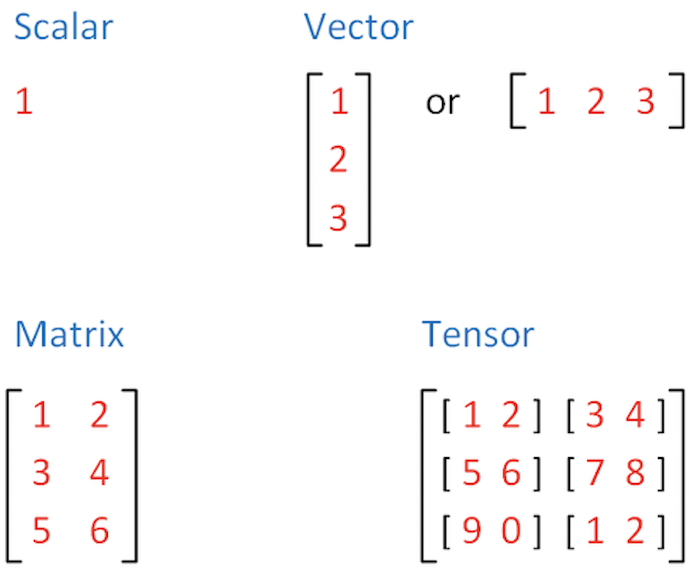

Sheet 2.1: PyTorch essentials
Contents
Sheet 2.1: PyTorch essentials#
Author: Michael Franke
This work sheet introduces the very basics of PyTorch. If you want to install PyTorch locally on your machine, follow these instructions. If installed, import the library to make it usable:
import torch
Tensors#
Tensors are the default data structure used for the representation of numbers in PyTorch. In mathematics (algebra), a tensor is a generalization of the concept of a matrix. For our purposes, let’s think of a tensor as basically an \(n\)-dimensional array of numbers.
For example, a single scalar (a single number) is a zero-dimensional array. An \(n\)-dimensional vector is a one-dimensional array of \(n\) numbers. An \(n \times m\) matrix is a two-dimensional array with \(n\) rows and \(m\) columns. All of these -scalars, vectors and matrices- are tensors. But tensors also include even more high-dimensional objects. For instance, an \(k \times n \times m\) tensor is a three-dimensional array, which includes \(k\) matrices, each of which has \(n\) rows and \(m\) columns. And so on.
Full documetation for the `torch.Tensor` class can be found here: https://pytorch.org/docs/stable/tensors.html

Exercise 2.1.1: Dimensions of tensors
What are the dimensions of the following tensors?
\(1\)
\([1,2,3]\)
\([[1,2], [3,4]]\)
\([[1,2], [3,4], [5,6]]\)
\([[[1,2], [3,4], [5,6]]]\)
Creating a tensor#
There are various ways to create a tensor in PyTorch. We will go through a few examples here.
Tensors can be initialised from a list:
a_list = [1, 2, 3, 4]
tensor_from_list = torch.tensor(a_list)
tensor_from_list
tensor([1, 2, 3, 4])
Or directly:
new_tensor = torch.tensor([1, 2, 3, 4])
new_tensor
tensor([1, 2, 3, 4])
Tensor construction will replicate shape and dimensionality of the data passed to it:
tensor_0d = torch.tensor(1)
tensor_0d
tensor(1)
tensor_2d = torch.tensor([[1,2,3],[4,5,6]])
tensor_2d
tensor([[1, 2, 3],
[4, 5, 6]])
Tensors can also be constructed from numpy arrays:
import numpy as np
np_array = np.zeros((2,2))
np_array_to_tensor = torch.tensor(np_array)
np_array_to_tensor
tensor([[0., 0.],
[0., 0.]], dtype=torch.float64)
Or with build-in torch functionality:
zeros = torch.zeros((2,2))
zeros
tensor([[0., 0.],
[0., 0.]])
ones = torch.ones((2,3))
ones
tensor([[1., 1., 1.],
[1., 1., 1.]])
filled = torch.full((4,3), 5)
filled
tensor([[5, 5, 5],
[5, 5, 5],
[5, 5, 5],
[5, 5, 5]])
Often we might also want to fill tensors with random numbers. The function `torch.rand()` populates a tensor of the given size with random numbers drawn uniformly from the unit interval.
torch.rand((2,3))
tensor([[0.1486, 0.3381, 0.1838],
[0.0723, 0.4560, 0.2320]])
Exercise 2.1.2: Creating tensors
Create a PyTorch tensor storing the following matrices:
a. \([[1,2], [3,4], [5,6]]\)
b. \([[[1,2], [3,4], [5,6]], [[10,20], [30,40], [50,60]]]\)
Create a PyTorch tensor of size \(3 \times 2 \times 4\) filled with the number 3.
Create a PyTorch vector with 6 random numbers (lying between 0 and 1).
Row & column vectors#
A one-dimensional tensor is a row-vector:
row_vector = torch.tensor([1,10,100])
print(row_vector)
print(row_vector.size())
tensor([ 1, 10, 100])
torch.Size([3])
Strictly speaking, there are no column vectors in PyTorch. A column vector would be a matrix with one column:
col_vector = torch.tensor([[1],[10],[100]])
print(col_vector)
print(col_vector.size())
tensor([[ 1],
[ 10],
[100]])
torch.Size([3, 1])
Tensor data types#
Tensor-supported data types are:
numeric: float, int
boolean
complex numbers
We can retrieve the type of a tensor with `.dtype`.
torch.tensor([1.5, 2.1]).dtype
torch.float32
If we construct a tensor with an integer, its type will be integer. Compare:
print(torch.tensor(5).dtype)
print(torch.tensor(5.0).dtype)
torch.int64
torch.float32
It is possible to declare the type explicitly, when constructing a tensor:
print(torch.tensor(5, dtype=torch.float64).dtype)
print(torch.tensor(1.0, dtype=torch.bool).dtype)
torch.float64
torch.bool
All the values in the same tensor are of the same data type.
true = torch.tensor([True, True])
print(true)
print(true.dtype)
tensor([True, True])
torch.bool
Careful: PyTorch will implicitly cast data types.
mix = torch.tensor([True, 1])
print(mix)
print(mix.dtype)
tensor([1, 1])
torch.int64
What about strings? PyTorch tensors have no character or string data type support.
hello = 'Hello World!'
hello_tensor = torch.tensor([ord(char) for char in hello])
hello_tensor
tensor([ 72, 101, 108, 108, 111, 32, 87, 111, 114, 108, 100, 33])
Attributes of a tensor#
Tensors have attributes, which store information about some of their important properties. Here are some important examples:
print(f"Datatype of tensor : {hello_tensor.dtype}")
print(f"Shape of tensor : {hello_tensor.shape}")
print(f"Device tensor is stored on : {hello_tensor.device}")
Datatype of tensor : torch.int64
Shape of tensor : torch.Size([12])
Device tensor is stored on : cpu
We have seen `dtype` already. The property `shape` gives equal output as a call to function `.size()`. The property assessed with `.device` tells us where the tensor is stored and manipulated. The default is the CPU. If your machine allows you can also shift all your tensors to a GPU. The syntax for doing this is slightly different on different machines.
Exercise 2.1.3: Tensor attributes & types
Inspect the tensor type with `.dtype` for tensors created from a list containing two different data types supported by PyTorch (int, float, Boolean).
Use `.shape` or `.size()` to inspect the shape of a (row) vector, a single column matrix, and a \(2 \times 3\) matrix.
Operations on tensors#
Indexing and slicing#
Indexing & slicing works in the way familiar from numpy.
matrix = torch.tensor([[1,2,3], [4,5,6], [7,8,9]])
print(matrix)
print(matrix[1,2]) # single element
print(matrix[2,:]) # third row
print(matrix[2]) # third row (alternative)
print(matrix[:,1]) # second column
tensor([[1, 2, 3],
[4, 5, 6],
[7, 8, 9]])
tensor(6)
tensor([7, 8, 9])
tensor([7, 8, 9])
tensor([2, 5, 8])
Joining tensors#
We can concatenate tensor like so:
head = torch.tensor([1,2,3])
tail = torch.tensor([4,5,6])
head_and_tail = torch.cat([head, tail])
print(head_and_tail)
tensor([1, 2, 3, 4, 5, 6])
What if we want to add a dimension?
print(torch.stack([head, tail]))
tensor([[1, 2, 3],
[4, 5, 6]])
Reshaping#
The function `torch.reshape()` is a frequently used way of returning a tensor in the specified shape. Its input are the desired output dimensions. NB: the reshaping returns a new tensor and does not modify the old tensor.
tensor_1 = torch.tensor([[1, 2], [3, 4]])
tensor_2 = tensor_1.reshape(4, 1)
print(tensor_1)
print(tensor_2)
tensor([[1, 2],
[3, 4]])
tensor([[1],
[2],
[3],
[4]])
a = torch.tensor([[0, 1],
[2, 3]])
b = torch.reshape(a, (-1,)) # to (row) vector
c = torch.reshape(a, (-1, 1)) # to one col matrix (~ col vector)
d = torch.reshape(a, (1, -1)) # to one row matrix
print(a)
print(b)
print(c)
print(d)
tensor([[0, 1],
[2, 3]])
tensor([0, 1, 2, 3])
tensor([[0],
[1],
[2],
[3]])
tensor([[0, 1, 2, 3]])
There is also the function `.flatten()` which returns all elements of a tensor.
a = torch.tensor([ [[0, 1], [2, 3]], [[4, 5], [6, 7]]] )
print(a)
print(torch.flatten(a))
tensor([[[0, 1],
[2, 3]],
:
[[4, 5],
[6, 7]]])
tensor([0, 1, 2, 3, 4, 5, 6, 7])
Transposing#
It is possible to transpose a tensor (with a dimension at least 2) by specified dimesions using the function: `torch.transpose()`, This function takes the dimensions which are to be transposed as an argument.
tensor_1 = torch.tensor([[[10, 20, 30], [40, 50, 60], [70, 80, 90]],
[[1,2,3],[4,5,6],[7,8,9]] ])
tensor_1_transpose = torch.transpose(tensor_1, 1, 2)
print(tensor_1)
print(tensor_1_transpose)
#+begin_example
tensor([[[10, 20, 30],
[40, 50, 60],
[70, 80, 90]],
[[ 1, 2, 3],
[ 4, 5, 6],
[ 7, 8, 9]]])
tensor([[[10, 40, 70],
[20, 50, 80],
[30, 60, 90]],
[[ 1, 4, 7],
[ 2, 5, 8],
[ 3, 6, 9]]])
#+end_example
Tensor arithmetic#
The usual infix notation for arithmetic functions works element-wise on tensors:
x = torch.tensor([1,2,3])
y = torch.tensor([1,4,8])
print(x + y)
print(x - y)
print(x * y)
print(x / y)
print(y ** x)
tensor([ 2, 6, 11])
tensor([ 0, -2, -5])
tensor([ 1, 8, 24])
tensor([1.0000, 0.5000, 0.3750])
tensor([ 1, 16, 512])
Broadcasting#
When we apply these operations to tensors of different sizes, PyTorch will try to broadcast the input.
For example, if we multiply a vector with a scalar, the scalar is broadcasted (extended) to a vector of the same length. The result is that each element in the vector is multiplied by that scalar.
x = torch.tensor([1,2,3])
print(x * 4)
tensor([ 4, 8, 12])
Similarly, for higher dimensions. With the usual arithmetic operations, a row vector will be recycled in the obvious way.
row_vector = torch.tensor([1,10])
matrix = torch.tensor([[1,2], [3,4]])
print("multiplication:\n", matrix * row_vector)
multiplication:
tensor([[ 1, 20],
[ 3, 40]])
print("division:\n" , matrix / row_vector)
division:
tensor([[1.0000, 0.2000],
[3.0000, 0.4000]])
print("addition:\n" , matrix + row_vector)
print("subtraction:\n" , matrix - row_vector)
addition:
tensor([[ 2, 12],
[ 4, 14]])
subtraction:
tensor([[ 0, -8],
[ 2, -6]])
The precise documentation of broadcasting is here.
Matrix Multiplication#
To perform a matrix multiplications on tensors, we use the function `torch.matmul(tensor1, tensor2)`, or its short-form notation `tensor1 @ tensor2`. If `tensor1` is an \((n×m)\) tensor, and `tensor2` is an \((m×p)\) tensor, the output will be an \((n×p)\) tensor.
tensor1 = torch.tensor([[1, 2], [3, 4], [5, 6]])
tensor2 = torch.tensor([[10, 0], [1, 100]])
print(torch.matmul(tensor1, tensor2))
print(tensor1 @ tensor2)
tensor([[ 12, 200],
[ 34, 400],
[ 56, 600]])
tensor([[ 12, 200],
[ 34, 400],
[ 56, 600]])
Notice that the function `torch.matmul()` implicitly converts and broadcasts and so also flexibly applies yields a matrix-vector product or a dot products.
matrix = torch.tensor([[1, 2], [3, 4], [5, 6]])
vector = torch.tensor([1,10])
print(matrix)
print(vector)
print(matrix @ vector) # matrix-vector product
print(vector @ vector) # dot prodcut
tensor([[1, 2],
[3, 4],
[5, 6]])
tensor([ 1, 10])
tensor([21, 43, 65])
tensor(101)
Full documentation of `torch.matmul()` is here.
Assessing just the values of a tensor#
The `tensor.item()` function returns the value of a single-item tensor without any further information, which is often useful for inspection or plotting of results:
tensor = torch.tensor([[1, 2], [3, 4], [5, 6]])
print(tensor[1,1])
print(tensor[1,1].item())
tensor(4)
4
To convert a larger tensor back to numpy (e.g., for plotting) you can do this:
another_tensor = torch.tensor([[1,2,3], [4,5,6]])
another_tensor.detach().numpy()
array([[1, 2, 3],
[4, 5, 6]])
Exercise 2.1.4: Operations on tensors
Define a tensor for matrix \([[[1,2], [3,4], [5,6]]]\). Create new tensors obtained by Reshaping this matrix into a vector (row vector), a one-column matrix. Also, create its transpose.
Compute the dot product between \([1,3,5]\) and \([1,10,100]\).
Compute the matrix product between PyTorch tensors \([[1], [2], [3]]\) and \([[1,10,100]]\). Convert the result to a numpy array.